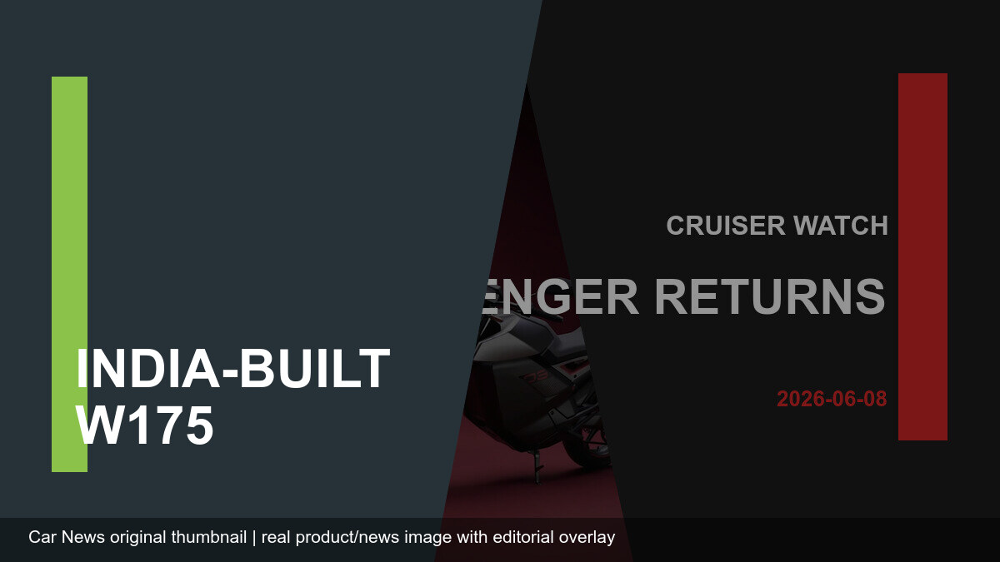

Bike News
India-Made Kawasaki W175 Goes to America: Why a Small Retro Bike Matters
Kawasaki's India-made W175 reaching the US market is not a volume shock, but it is a useful signal: small motorcycles built in India can serve global entry-level riders when pricing, quality and brand positioning line up.